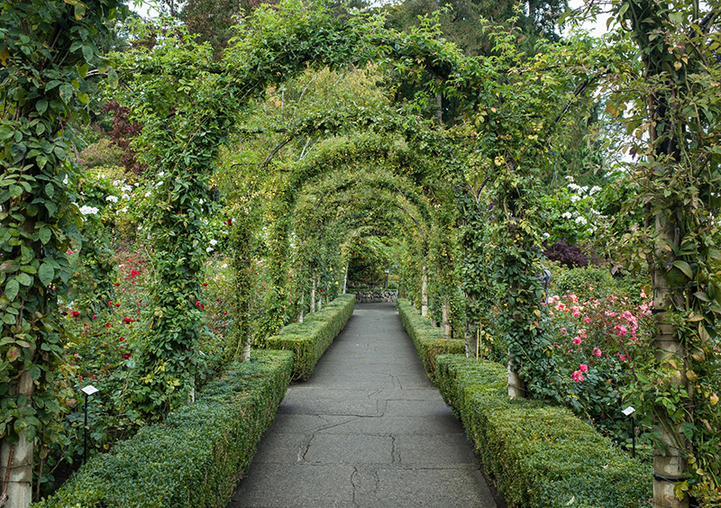
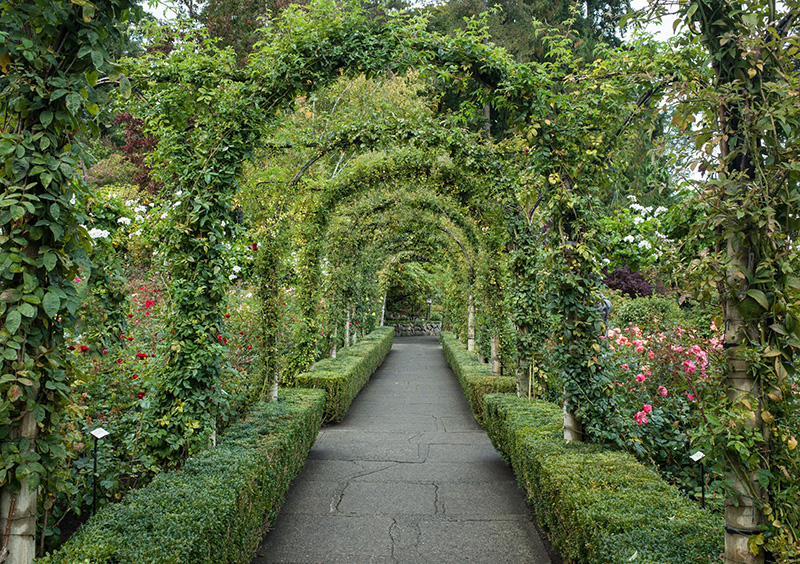

LE_JARDIN_DE_BUTCHARD
Les Jardins Butchart sont un groupement de jardins d'exposition florale situés à Brentwood Bay, en Colombie-Britannique , sur l'île de Vancouver au Canada. C'est une attraction touristique internationalement connue qui reçoit plus d'un million de visiteurs chaque année. Un service de cuisine de haute qualité et des animations complètent les jardins sculptés.


Naissance
Ce jardin voit le jour en 1904 dans un ancienne carrière de calcaire sur l'île de Vancouver au Canada. La Famille Butchart réhabilite peu à peu ce terrain de 22 hectares, puis au fil des années un immense parc se dessine comprenant cinq aires différentes, reliées entre elles par des pelouses et des sentiers merveilleusement entretenues :Le Jardin Submergé (Sunken Garden) crée en 1909 ;Le Jardin des Roses (Rose Garden) crée en 1929 ;Le Jardin Italien (Italian Garden) crée en 1926 ;Le Jardin Méditerranéen (Mediterranean Garden) ;Le Jardin Japonais (Japanese Garden) crée en 1906.
 

EVOLUTION
Aujourd'hui plus de cinquante jardiniers travaillent au fil des saisons pour entretenir les milliers de fleurs, plantes et arbustes ainsi que pour assurer une fleuraison ininterrompue de mars à octobre. Parmi ces plantes on peut admirer azalées, jacinthes, tulipes, jonquilles, rhododendrons, roses, dahlias et bien d'autres, ainsi que de nombreux arbres fruitiers et plantes tropicales. Pour cela 26 serres sont à la disposition des horticulteurs permettant la culture dans les meilleures conditions des futures plantes ornementales. De novembre à février les visiteurs peuvent apprécier les plantes couvertes de baies colorées, et les arbustes et arbres de toutes les formes. Les jardins Butchart font aussi office de refuge pour de nombreuses espèces d'oiseaux.
UN_ENDROIT_CHALEUREUX
Le parc s'est étendu pour devenir un des lieux d'exposition les plus visités au monde, attirant plus d'un million de visiteurs chaque année. Il n'est plus désormais simplement un magnifique jardin mais il accueille aussi une aire de concert extérieure, des expositions de photographies, des illuminations nocturnes, ainsi qu'une patinoire en période de Noël.
DECOUVREZ_LE_JARDIN_DE_BUTCHARD